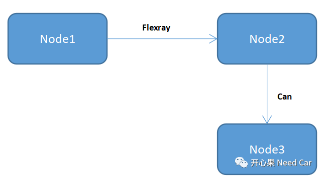
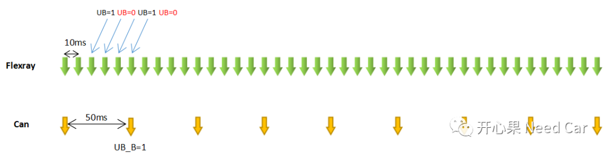

前言
在CP Autosar中，通信可以说是基于信号的处理，既然可以将数据帧拆分到信号级别，是不是意味着可以实现信号的路由？Autosar Com层给了我们答案：是的。虽然autosar给了规范指导，但在实际应用中真的需要花点心思理解，本文侃侃Com层基于Update Bit（UB）路由功能。
解读需求
作为开发人员，第一步要做的就是解读客户的需求，并且对质疑点与客户核对，确保对需求的理解准确无误。在这举一个基于UB路由的需求：发送节点Node1使用Flexray总线每10ms发送一个数据Package，其中包含信号A，信号A的更新由UB标识，节点Node2通过Flexray总线接收信号A，如果信号A更新过（UB置位）则通过CAN总线每50ms发送给节点Node3，且设置UB_B，否则UB_B不置位。
节点数据交互如下所示，这里的Node2充当网关（GateWay）,即要处理接收也要处理发送。

UB更新如下所示，在Flexray总线上，UB更新频率是10ms,只要在50ms内有一次UB=1，则转发到CAN总线时，UB_B 需要置1，否则UB_B=0，信号转发给Node3的周期是50ms。可以看出在50ms时间内，Flexray总线的UB被更新5次，而Can总线转发时，50ms设置一次UB_B。需求的意图：在Flexray总线上，5次UB的更新，只要有一次更新UB=1，则需要路由给Can总线，且Can总线转发该信号时，对应的UB_B置1。如果5次UB的更新均为0，则该信号不路由给Can总线，而Can总线发送该信号时，UB_B = 0。

如上的需求能否符合Autosar呢？换句话说：按照Autosar规范开发能否实现？个人理解：可以的，且看如下分析。
Autosar Com 基于信号/信号组路由规范解读
基于下图解读Com层如何通过UB实现上述需求路由。 当Node2节点接收到数据时，通过Com_Rxindication接口通知Com层有数据需要接收，Com_Rxindication调用callout进行数据的接收（实际在配置工具中可能是一个宏开关，打开即可使用此callout接口，实现中一般都打开），接收的数据放置到接收缓冲区，注意此时是将整个I-PDU数据缓冲（I-PDU包含接收的UB），即更新数据，更新的频率取决于发送方的发送周期。 数据更新以后，如果当前信号或者信号组有UB，则检查UB的有效性，如果UB无效则不进行路由转发，如果UB有效则需要路由，即将信号A路由到发送缓冲区。节点（Node2）发送此信号时使用发送缓冲区内的值，如果信号A一直没有路由过来，即UB一直无效，Node2在发送时，UB_B不置位，表明信号A发送时没有更新，如果在发送前，信号A被至少路由过一次，即缓存到Node2发送缓冲区过至少一次，Com层需要将UB_B置位。注意只有Com层有权修改UB/UB_B。Node2节点作为网关角色时，接收到的UB和发送需要设置的UB_B是两个不同的Bit，不要理解成一个。且Node2节点在Com层接收信号A和转发信号A可以是不同的周期，如需求中，10ms周期接收信号A，转发时以50ms周期发送。这一点不同与PDUR，PDUR是基于I-PDU的路由，且路由时接收和发送的周期需要保持一致，Com是基于信号的路由，且收/发周期可以不同。 发送信号由UB标识，发送完成后，UB标志由Com清除，也可以理解为PDUR通知Com发送完成后，Com清除UB。
注意：更新数据需要转换字节序，确保数据存储顺序正确。 如上分析，文章最开始的需求，Autosar给出了规范，但实现的细节可能因各家工具链的情况而异。如果工具链没有实现该功能也可以通过其它方式实现。简而言之，Autosar提供的是一个方法论，遵循与否也只是实现需求的一种选择，对需求的实现可以有不同的方式。